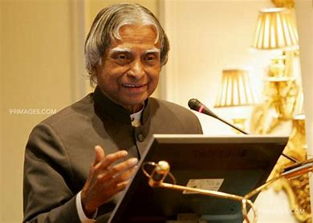

A.P.J ABDUL KALAM
1931-2015
"If you want to shine like a sun, first burn like a sun."
Avul Pakir Jainulabdeen Abdul Kalam was an Indian aerospace scientist and statesman who served as the 11th president of India from 2002 to 2007. He was born and raised in Rameswaram, Tamil Nadu and studied physics and aerospace engineering. He spent the next four decades as a scientist and science administrator, mainly at the Defence Research and Development Organisation (DRDO) and Indian Space Research Organisation (ISRO) and was intimately involved in India's civilian space programme and military missile development efforts.He thus came to be known as the Missile Man of India for his work on the development of ballistic missile and launch vehicle technology.He also played a pivotal organisational, technical, and political role in India's Pokhran-II nuclear tests in 1998, the first since the original nuclear test by India in 1974.
Abdul Kalam is one of the finest leaders of this country. He is admired for his achievements and led a very successful life. His way of living and his vision will continue to inspire people. Below is the list that tries to do honour to his countless achievements: In 1960, Dr Kalam joined the Defence Research and Development Organisation (DRDO) (DRDO) after he finished his graduation from the Madras Institute of Technology. In DRDO, Kalam was responsible for designing helicopters for the Indian Army. Dr Kalam was selected as the project director for SLV-III, India’s first indigenous satellite launch vehicle, after he joined the Indian Space Research Organisation (ISRO). After SLV-III was successful in launching the satellite Rohini to orbit in July 1980, Dr Kalam started expanding India’s space programme on a wider scale.
Under his command, he had a team of India’s best soldiers. He simultaneously served as Prime Minister’s Chief Scientific Adviser from July 1992 to December 1999, and also the Secretary of the Defence Research and Development Organisation (DRDO). In 1998, Kalam and Dr Soma Raju collaborated to design a low-cost coronary stent. The stent was dubbed the “Kalam-Raju Stent.” For rural health care, the “Kalam-Raju Tablet” was created in 2012. The Pokhran-II nuclear tests in 1998 proved India’s nuclear capabilities. Without Dr Kalam’s assistance, this project would not have been possible. Such weapons, he explained to the international community, would serve solely as “weapons of peace” to discourage other countries from the annexation of Indian territory. As the leader of India’s missile programme in the 1980s, political parties came together in 2002 to elect APJ Abdul Kalam as the country’s eleventh president.